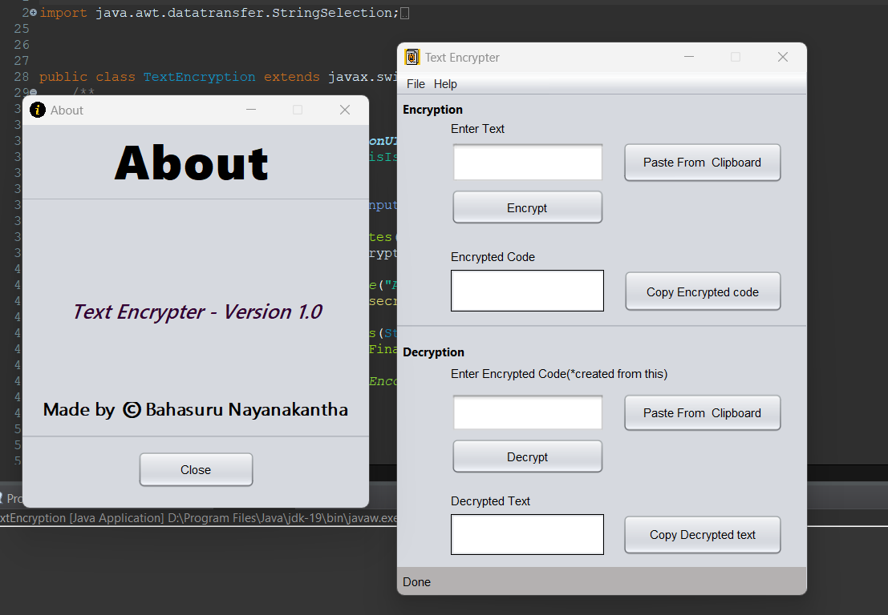
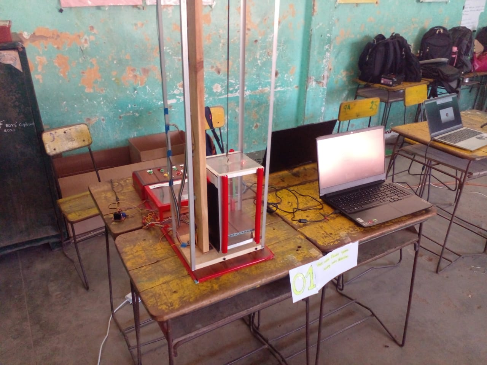
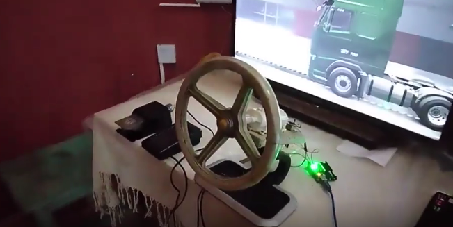
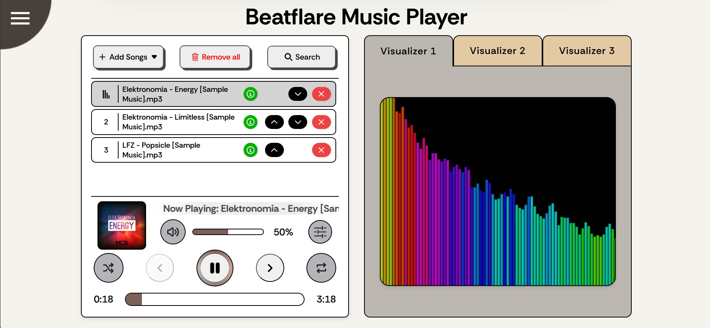
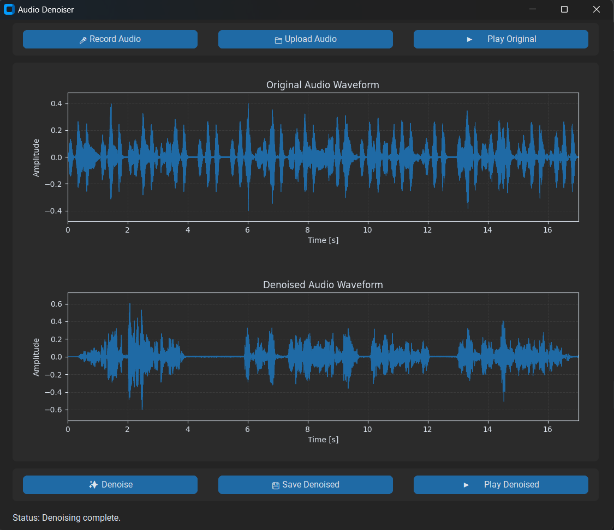

A line-following robot is a type of autonomous robot that is capable of tracking and following a line or
path on the ground. These robots are commonly used in various applications such as industrial automation,
logistics, and hobby projects. They typically consist of a chassis, wheels, motors, sensors, and a
microcontroller for processing.
My Role:
As the lead developer, I designed, programmed, and rigorously tested the autonomous robot to ensure precise
line-tracking performance. My responsibilities included sensor calibration, implementing PID-like control
logic in C++ (Arduino), hardware integration, and systematic debugging to optimize speed and accuracy.
Technologies and Tools:
Arduino: Arduino is a popular open-source electronics platform based on easy-to-use hardware and
software. It's commonly used for building interactive projects and prototypes, making it an ideal
choice for creating a line-following robot.
Sensors: Line-following robots typically use infrared (IR) sensors or reflective optical sensors to
detect the line on the ground. These sensors provide feedback to the microcontroller, allowing the
robot to adjust its direction accordingly.
Motor Drivers: Motor drivers are electronic circuits or modules used to control the speed and
direction of motors. In the case of a line-following robot, motor drivers are essential for driving
the wheels or motors to maneuver the robot along the desired path.
Breadboard or PCB: Breadboards or printed circuit boards (PCBs) are used for prototyping and
connecting electronic components such as sensors, motors, and the microcontroller. They provide a
convenient platform for wiring and testing the circuitry before final assembly.
Programming Languages: Arduino programming typically involves writing code in the Arduino IDE using
a variant of C/C++.
# Project 2: Text encryption software

Description:
Text encryption software is a type of software designed to encode text data in such a way that it becomes
unreadable to anyone without the proper decryption key. This software is commonly used to secure sensitive
information, such as personal messages, financial data, or confidential documents, from unauthorized access.
My Role:
I designed and implemented a robust text encryption application, focusing on data security and user-friendly
interaction. My role involved selecting and implementing the AES encryption algorithm, developing the
backend logic in Java using NetBeans, and creating a secure interface to ensure reliable data protection for
sensitive information.
Technologies and Tools:
Programming languages Java
Encryption libraries and algorithms ( AES )
Integrated Development Environments (IDEs) like netbeans
Version control systems ( Git)
# Project 3: Smart Elevator

Description:
Led the implementation of a cutting-edge smart elevator system, revolutionizing vertical transportation in
commercial buildings. The project aimed to enhance user experience, optimize energy efficiency, and improve
overall building management. The smart elevator system incorporated advanced technologies to streamline
operations and deliver a seamless and intelligent vertical mobility solution.
My Role:
Research and Development
Project planning
Team coordination
Hands-on involvement in the technical aspects
System Integration
Technologies and Tools:
IoT Integration
Arduino
Energy Management Systems
User Interface (UI) Design(RemoteXY)
Mobile App Development(RemoteXY)
# Project 4: DIY Gaming Steering Wheel with Arduino

Description:
Created a custom DIY gaming steering wheel with pedals powered by an Arduino Uno microcontroller. Instead of using a conventional potentiometer, I utilized a rotary encoder salvaged from an old mouse for steering input. This choice provides a cleaner signal, superior noise immunity, and significantly better durability—ideal for intensive gaming sessions. The system leverages interrupt-driven programming to efficiently process encoder inputs, ensuring precise and responsive steering control.
My Role:
Hardware Design and Integration
Arduino Microcontroller Programming
Rotary Encoder Implementation using Interrupt Handlers
# Project 5: Beatflare – Modern Music Player Website

Description:
Beatflare is a modern, lightweight, and open-source music player website designed to provide a smooth and enjoyable listening experience across all devices. The platform emphasizes clean design, powerful functionality, and an immersive audio experience. Desktop users enjoy enhanced controls, advanced visualizations, and full equalizer capabilities, while mobile users benefit from an optimized responsive interface. The application features an intuitive interface with comprehensive audio management and customizable sound effects.
My Role:
Full-stack Web Application Development
User Interface and User Experience Design
Audio Processing and Visualization Implementation
Theme and Aesthetic Customization System
Responsivity and Cross-Device Optimization
Technologies and Tools:
HTML5 for Semantic Web Structure
CSS3 for Modern Styling and Animations
JavaScript for Interactive Functionality and Web Audio API
Audio API for Equalizer and Sound Effects Processing
Canvas API for Audio Visualization
Multiple Audio Format Support (MP3, WAV, OGG, etc.)
Light & Dark Mode Theme Implementation
Multiple Color Themes
Responsive Design for All Devices
Party Mode with Visual Effects
Key Features:
▶️ Play, Pause, and Skip track controls
📂 Support for multiple audio formats
🌙 Light & Dark Mode for comfortable viewing
🎨 Multiple Color Themes to personalize experience
🎚️ Customizable Equalizer with audio effects
📃 Effortless Song Management and library organization
🔊 Real-time Audio Visualizer
🎉 Surprise Party Mode for enhanced entertainment
✨ Optimized Desktop Experience with immersive controls
# Project 6: Advanced Audio Denoising System with CNN

Description:
An advanced audio denoising system leveraging Convolutional Neural Networks (CNNs) with U-Net architecture and a ResNet101 backbone. This deep learning-powered solution transforms noisy audio into clear, intelligible sound by intelligently separating voice signals from background noise. The system excels in challenging low signal-to-noise ratio environments, making it ideal for applications in voice assistants, call enhancement, accessibility technologies, and professional audio processing. Trained on the comprehensive LibriSpeech Noise Dataset, it demonstrates robust performance across diverse noise conditions.
My Role:
Deep Learning Model Architecture Design (U-Net with ResNet101)
Dataset Preparation and Preprocessing (LibriSpeech Noise Dataset)
Model Training and Optimization (achieving 0.0083 validation loss)
Client-Server Backend Implementation
GUI Development using CustomTkinter
Real-time Audio Processing Integration
Technologies and Tools:
Python for Core Development
TensorFlow/Keras for Deep Learning Framework
U-Net Architecture with ResNet101 Backbone
LibriSpeech Noise Dataset for Training
CustomTkinter for User Interface
Client-Server Model for Backend Processing
Real-time Audio Recording and Playback
Waveform Visualization Libraries
Audio Signal Processing Libraries (Librosa, PyAudio)
Key Features:
🎙️ Real-time microphone recording and playback
📤 Audio upload functionality with waveform visualization
🔧 Robust client-server backend architecture
📊 Training on LibriSpeech Noise Dataset for diverse environments
📈 Achieved validation loss of 0.0083 after 100 epochs
🖥️ Scalable and user-friendly GUI with CustomTkinter
🎯 Effective noise reduction in low SNR scenarios
⚡ Optimized for voice assistants and accessibility applications
A modern and user-friendly To-Do list mobile application built using Kotlin and Jetpack Compose. This application enables users to manage multiple task lists and items with seamless synchronization across devices. It combines offline-first architecture with cloud backup capabilities, providing a robust solution for personal task management with enterprise-grade features like real-time search, manual task reordering, and secure authentication through Firebase.
My Role:
Full Android Application Development with Kotlin
UI/UX Design using Jetpack Compose and Material Design 3
Local Data Persistence Implementation using Room Database
Cloud Integration with Firebase Authentication and Firestore
A cutting-edge Face Recognition Attendance System that leverages AI and deep learning to simplify and automate attendance tracking. This intelligent system utilizes advanced facial feature extraction and classification to provide highly accurate real-time recognition, even in challenging conditions. The system seamlessly integrates with enterprise infrastructure including HR databases, time management platforms, and access control hardware, making it ideal for organizations of all sizes.
My Role:
Deep Learning Model Implementation Using VGG16 Architecture
Face Detection and Recognition Pipeline Development
Integration of MediaPipe for Multi-Angle Face Detection
Training System Design (Automatic & Manual Training)
Enterprise System Integration
Real-time Performance Optimization
Technologies and Tools:
Python for Core Development
VGG16 Deep Neural Network Model for Facial Feature Extraction
MediaPipe for Multi-Angle Face Detection and Tracking
TensorFlow/Keras for Deep Learning Framework
Computer Vision Libraries (OpenCV)
Facial Recognition Libraries
Real-time Processing and Optimization
Enterprise Integration APIs
Key Features:
🔍 Real-time Face Recognition powered by VGG16 model with highly accurate facial feature extraction
📸 MediaPipe Integration for multi-angle face detection in diverse lighting conditions
⚙️ Automatic Training when users are added or removed from the system
🛠️ Manual Training option for administrators to optimize accuracy
🔗 Seamless Integration with HR databases, time management platforms, and access control hardware
📈 Scalability & Flexibility supporting real-time updates and system customization
⚡ Enhanced Efficiency reducing administrative overhead while increasing accuracy
🚀 Future-Ready with planned GPU support, secure login pages, and cloud-based data storage
🔓 Liveness Detection to prevent spoofing and unauthorized access
🌐 Edge Computing capabilities for on-device processing
A lightweight Node.js + Express web app that converts any text into a downloadable MP3 audio file using text-to-speech technology. This intuitive application provides a seamless experience with an in-browser audio player for preview before download, live character counting, and comprehensive input validation. Built with modern web standards and no framework dependencies, it delivers a clean, dark-themed interface optimized for both desktop and mobile devices.
My Role:
Full-Stack Web Application Development
Backend API Design and Implementation using Express.js
Text-to-Speech Integration and MP3 Generation
Frontend UI Development with Modern CSS and Vanilla JavaScript
Audio Player Implementation and Download Functionality
Input Validation and Error Handling
Technologies and Tools:
Node.js v14 or later for Runtime Environment
Express.js for HTTP Server and Static File Serving
simple-tts-mp3 NPM Package for Text-to-Speech Conversion
HTML5 for Semantic Web Structure
CSS3 for Modern Dark Theme Styling
Vanilla JavaScript for Interactive Functionality
HTML5 Audio API for In-Browser Playback
File System Operations for MP3 Generation and Storage
npm for Package Management
Key Features:
🎙️ Convert text to speech and save as MP3
▶️ In-browser audio player — listen before you download
⬇️ One-click MP3 download
📊 Live character counter (up to 5,000 characters)
✅ Input validation with friendly error messages
🌐 Clean, modern dark UI — no frameworks required
📱 Responsive design for all devices
⚡ Fast and lightweight performance
Project Structure:
index.js - Express server with API endpoints
public/index.html - Frontend user interface
public/audio/ - Generated MP3 files storage
package.json - Project dependencies and configuration